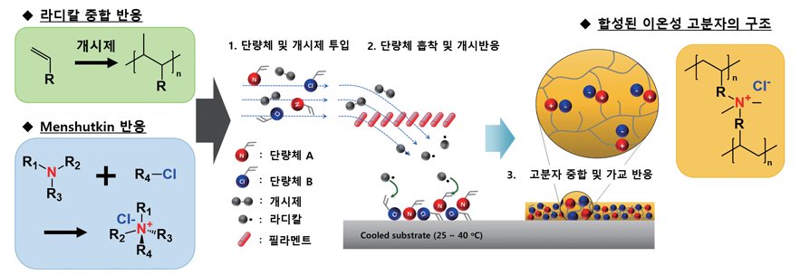

KAIST Top 10
KAIST Top 10
KAIST RESEARCH ACHIEVEMENTS
Ultrathin, Cross-Linked Ionic Polymer Thin Films
Department of chemical and Biomolecular Engineering Sung Gap Im
Summary
In spite of excellent ion conductivity and versatile functionalities, ionic polymers had suffered from low mechanical strength and damage-prone nature against various solvent. We developed a novel synthetic method for an ultrathin (sub-20 nm), yet highly robust ionic polymer thin film. By exploring various ionic monomers and introducing an in-situ ionic cross-linking reaction, a series of ionic polymer films were newly synthesized whose surface properties could be controlled exquisitely. For the uniform deposition of ultrathin ionic polymer films, a novel vapor-phase deposition method was exploited and employed for the surface modification of any arbitrary substrates. Finally, the developed ionic polymeric thin films were applied to various areas such as oil-water separation membranes and ultra-strong adhesives. We believe the developed ultrathin ionic polymer films can open up for wide area of applications.
Background
Ionic polymers have received great attention in the field of polymeric material science due to their own unique advantageous properties, including ion conductivities, ion exchange properties, and high polarity. However, ionic polymers contain polar ionic salts,
which makes the polymer highly vulnerable to most of polar solvents. Cross-linking of ionic polymers was attempted in order to improve the chemical and mechanical stability of the ionic polymers by adding cross-linker molecules. However, the cross-linking significantly limits the polymer chain mobility and thus the processability of the polymer.

Contents
Vapor-phase synthesis of cross-linked ionic polymers (CIPs) can resolve most of the problems noted above. In this work, we adopted a vapor-phase polymerization method, termed initiated chemical vapor deposition (iCVD), which utilizes a radical polymerization reaction to fabricate polymeric thin 詮걄ms from vaporized monomers and an initiator. The injected monomers are adsorbed on the surface of substrate, and the free radicals formed by thermal decomposition of the initiator are delivered to the adsorbed monomers. Finally, a polymer thin 詮걄m grows on the substrate surface, resulting in a dewetting-free, highly conformal film maintaining the initial surface morphology of the substrates. However, the synthesis of ionic polymers in the vapor phase have not yet been possible because the monomers with ionic functionalities commonly show negligible vapor pressure due to the nonvolatile ionic components. To overcome this problem, it is necessary to design a new synthetic method to incorporate ionic components in the polymer chain. In this study, we chose two kinds of monomers without ionic species, thus both reactants are readily vaporizable. By vaporizing the two monomers into the iCVD chamber, we attempted to trigger an ionic cross-linking reaction simultaneously with an iCVD polymerization reaction in a one-step manner, which was designed so that the process does not require any additional cross-linker. For this purpose, we utilized an in situ ionic cross-linking reaction between a tertiary amine-containing monomer as a nucleophile and an alkyl halide-containing monomer as an electrophile to induce the quaternarization of the tertiary amine. As a result, we can synthesize highly uniform CIP thin films in situ with controlled thickness and large-area uniformity. The CIP synthesized in this work also showed an excellent chemical stability against most of the organic solvents. The CIP films maintained their hydrophilicity even with the increased cross-linking density.
Expected effect
-The stable, ultrathin ionic polymer can be utilized in various fields such as oil/water separation membranes, ultra-strong nano-adhesives, and the surface treatment for ion-conductive electrochemical applications. We believe that the one-step synthesized CIP film in the vapor phase can provide an important idea to generate other new types of CIP films.
Research Funding
This work was supported by the National Research Foundation of Korea (NRF) Grant funded by the Korean government (MEST) (2017R1A2B3007806).
This work was also supported by the Advanced Biomass R&D Center of Global Frontier Project and the Center for Advanced Soft-Electronics funded by the Ministry of Science, ICT and Future Planning as a Global Frontier Project (ABC-2010-0029728, and CASE-2017M3A6A5052509)
This work was also supported by Wearable Platform Materials Technology Center (WMC) funded by NRF Grant of the Korean Government (MSIP) (No. 2016R1A5A1009926)
Research Outcomes
M. Joo†, J. Shin†, J. Kim, J.B. You, Y. Yoo, M.J. Kwak, M.S. Oh, S.G. Im*, "One-Step Synthesis of Cross-Linked Ionic Polymer Thin Films in Vapor Phase and Its Application to an Oil/Water Separation Membrane", Journal of the American Chemical Society, 2017, 139(6), 2329–2337
MM. Joo†, M.J. Kwak†, H. Moon, E. Lee, S.Q. Choi, S.G. Im*, “Thermally Fast-Curable, “Sticky” Nano-Adhesive for Strong Adhesion on Arbitrary Substrate, ACS Applied Materials and Interfaces, 2017, 9(46), 40868–40877